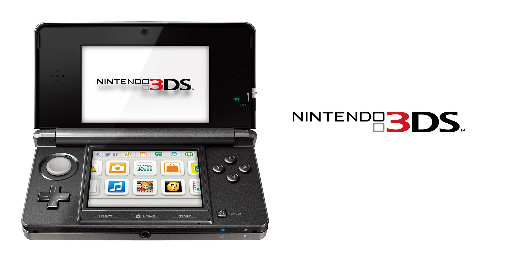
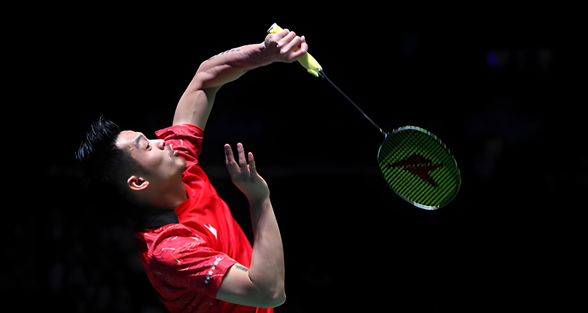

My Favorites

My Favorites Thing
My favorite thing is the Nintendo 3DS. I already like video game since I was a kid, so my 6th birthday present was a brand new black Nintendo 3DS that my aunt and uncle bought in Japan and gave me. My childhood revolved around the Nintendo 3DS because it had all kinds of games like Pokemon Shuffle, Super Mario, Tomodachi Life, Animal Crossing New Leaf, Face Raiders, etc... and I could spend the whole day just playing these games on the 3DS. When the Nintendo 3DS was released, it had all sorts of technology that I had never seen before, like the 3DS had a stylus on the back that you could use to interact with the screen, or the 3DS had a '3D mode' button so that when watching YouTube or movies, the effect would be more fun. In addition, the Nintendo 3DS also had a feature called StreetPass, to enable this feature, you just had to turn on the 3DS and make sure it had a Wifi connection. Then you can walk outside and if you are lucky enough to meet someone else who also has StreetPass enabled, the data from both devices will be transferred back and forth, allowing us to make friends with other people. Although in Vietnam, 3DS users are rare, especially in 2012, it is still an interesting feature. Furthermore, the 3DS also has 'Nintendo 3DS sound', an application that allows you to listen to music in the SD card in mp3, m4a, mp4, 3gp formats. Putting aside, although technology has developed rapidly and many new Nintendo machines have been released, deep in my heart, the Nintendo 3DS is still a memory, an old love that is hard to fade because of the nostalgic values it brings every time it is mentioned.

My Favorites Activity
I am a person who loves playing badminton and I am very good at it. I started playing badminton at the age of 5 and had a long training period. My favorite badminton player was Lin Dan, a Chinese former professional badminton player with 2 Olympic gold medals. There were times when I skipped school just to play badminton for 1-2 hours and many times my teacher called my parents to school for this reason. What makes me like playing badminton is quite simple, playing badminton helps me remember the time when I played badminton with my grandmother and father every afternoon at 6pm, playing badminton helps me temporarily forget the existing pressures and I can release the pressure through the shuttlecock and smash the shuttlecock into the opponent's court. Badminton also gave me memories that are hard to describe in words like the coach once made me run around the school 10 times just to train my fitness or the fact that I always held the racket in the wrong position, causing my wrist to always be in an alarming state. In addition, the physical requirements and the ability to coordinate strength for each movement are crucial factors for you to have a big advantage over your opponent, especially when you play singles in badminton because a set can last 30-40 minutes and if both players have to decide the winner in the third set which is also the last set, it means that you have to continuously move for more than 1 and a half hours, basically the distance you move is no different from that of a soccer player in the midfielder position. After all, badminton has a great meaning to me, not only in terms of the health it brings, but also in terms of sentimental value.